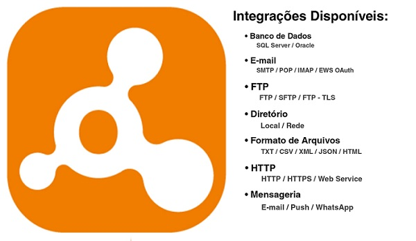

Utilize o poder da integração ao seu favor.
O JJ Integration oferece uma solução poderosa e flexível para integrações entre diferentes aplicações. Com diversas opções de conexão disponíveis, você pode conectar e sincronizar seus sistemas de forma eficaz.
Uma das principais vantagens do JJ Integration é o seu avançado sistema de agendamentos, que permite configurar periodicidade, frequência e tarefas a serem executadas. Além disso, você pode personalizar o nível de log para acompanhar detalhes da execução e escolher o local onde será gravado o log (Arquivo, Banco de dados, Event Viewer, Console ou Trace).
Com o JJ Integration, você pode criar integrações personalizadas, utilizando suas próprias regras de validação de dados, tanto para importação quanto para exportação de arquivos. Tudo isso é possível através de um painel de administração prático e intuitivo, que torna todo o processo simples e acessível.
